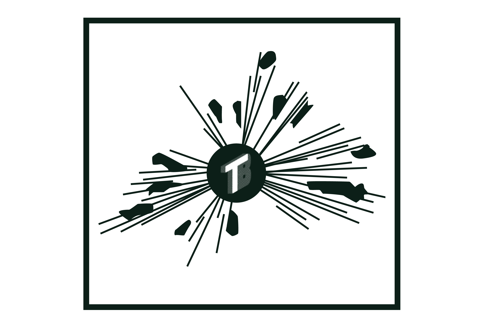
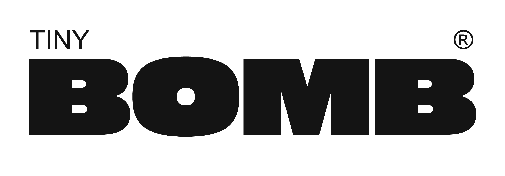
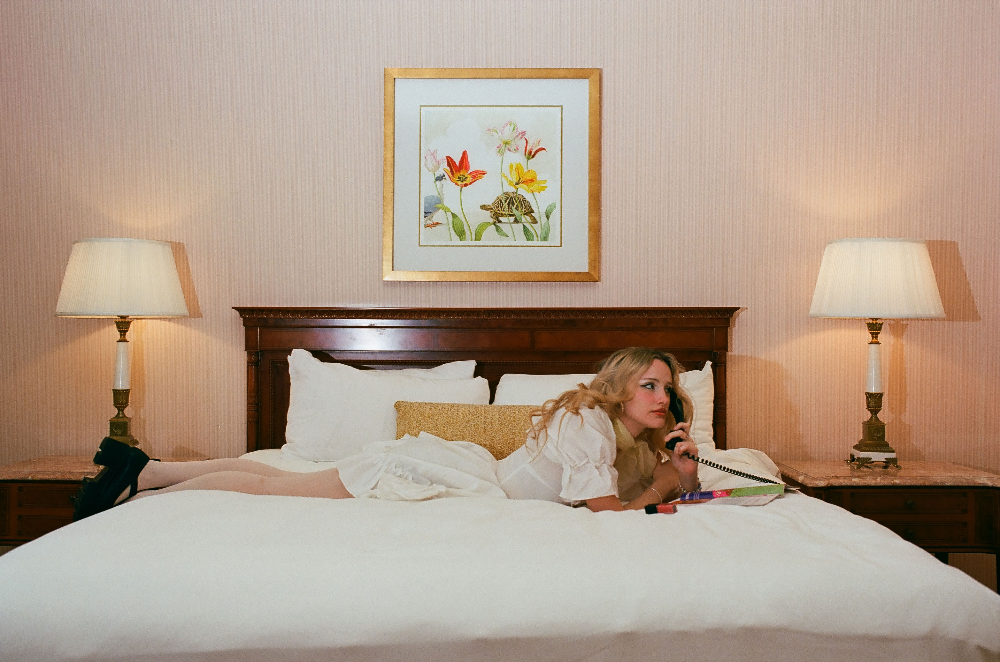
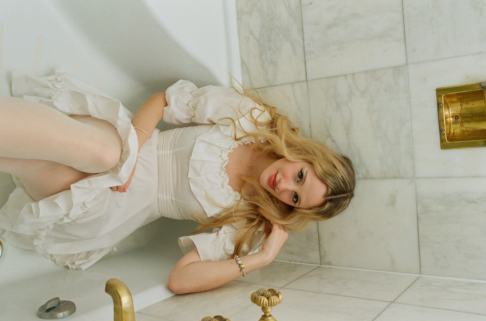
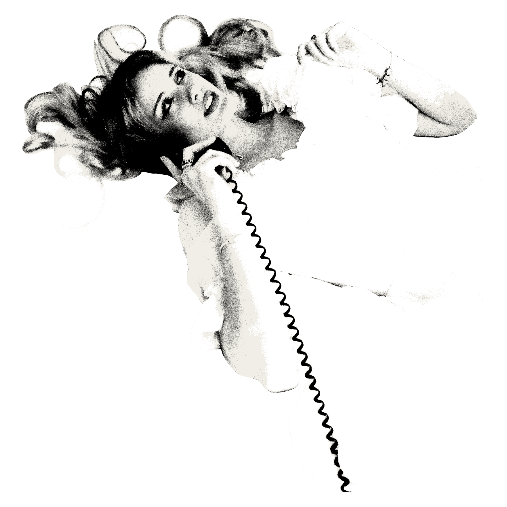
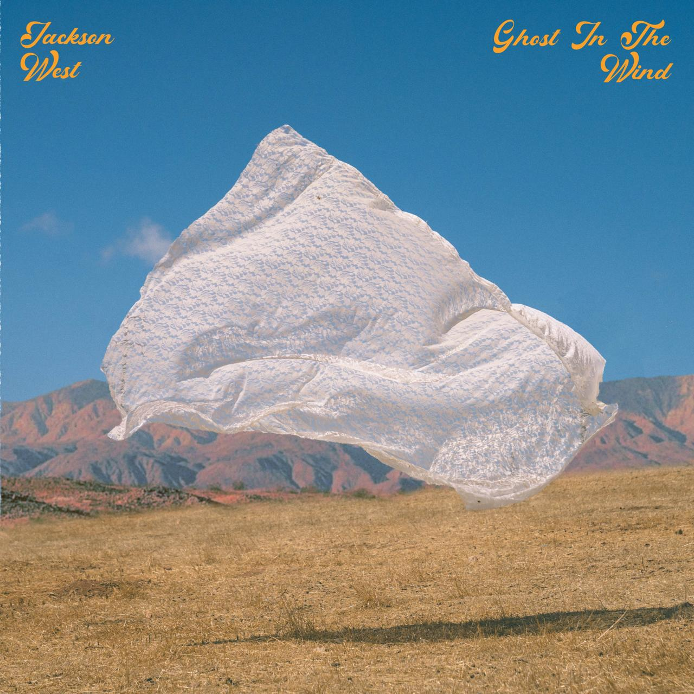

JACKSON WEST
GHOST IN THE WIND; CASE STUDY
CREATIVE DIRECTION
COBIAN STUDIOS
PROJECT DEVELOPMENT
TINY BOMB
BRAND DESIGN
COBIAN STUDIOS
CC 2026



PROJECT OVERVIEW
The album is to be story and lyric driven taking you on a ride through my life; longing, loneliness, adventure, humility, & lessons learned. The songs are to balance timelessness while also being undeniably Jackson. The songs should be good yesterday, today, & tomorrow because of the classic instrumentation and relatable stories. The genre is country but not alike to much mainstream country. Someone could easily say “I don’t like country music but I like Jackson West.”

FLY JACKIE TO ST. LOUIS
LOOK AT ALL THE FLOWERS
NEW MEXICO
TALKING TO THE WALLS


This project ultimately exists as a reflection on movement—through places, through time, and through self. Each piece contributes to a broader narrative shaped by memory, distance, and the quiet persistence of feeling. Rather than seeking resolution, the work embraces the ongoing nature of these experiences, allowing them to remain fluid and unresolved. In doing so, it holds space for both the personal and the universal, where stories are not fixed, but continuously unfolding.
A MESSAGE FROM DREW JONES
